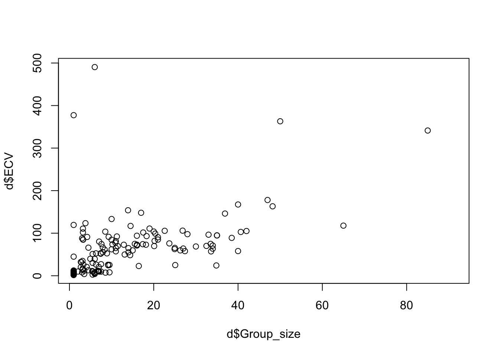
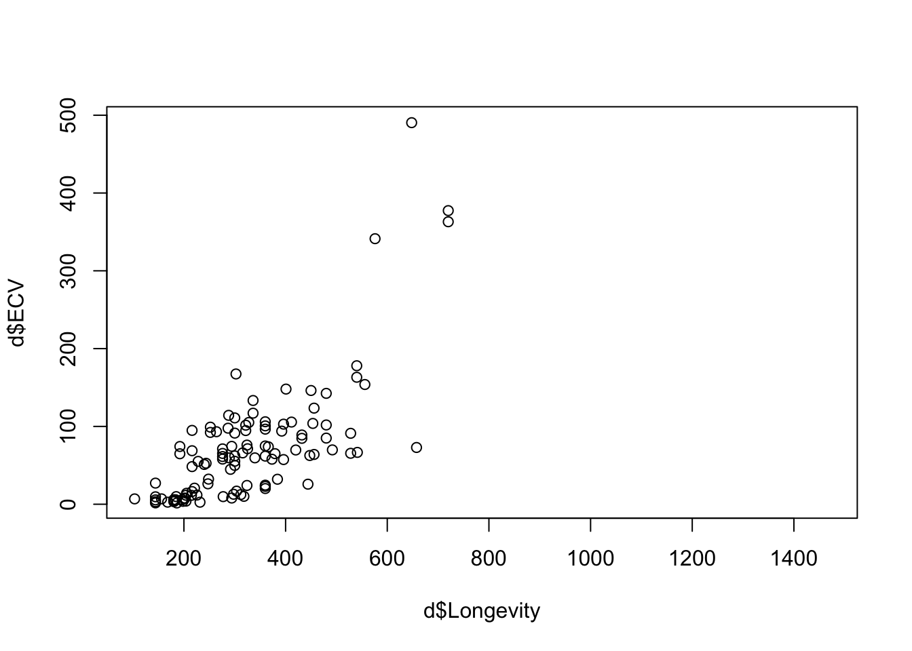
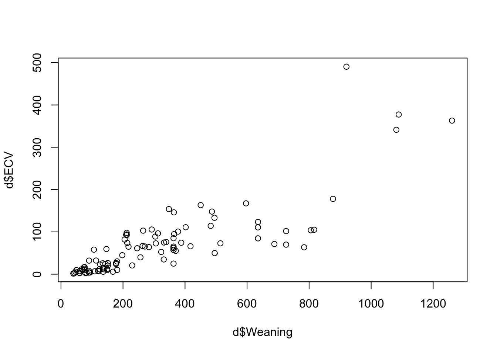
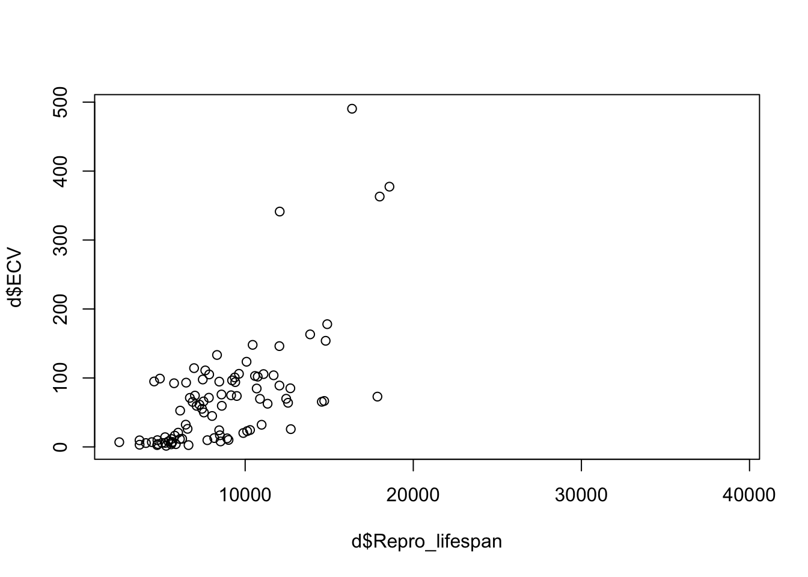

── Attaching core tidyverse packages ──────────────────────── tidyverse 2.0.0 ──
✔ dplyr 1.1.4 ✔ readr 2.1.5
✔ forcats 1.0.0 ✔ stringr 1.5.1
✔ ggplot2 3.5.1 ✔ tibble 3.2.1
✔ lubridate 1.9.3 ✔ tidyr 1.3.1
✔ purrr 1.0.2
── Conflicts ────────────────────────────────────────── tidyverse_conflicts() ──
✖ dplyr::filter() masks stats::filter()
✖ dplyr::lag() masks stats::lag()
ℹ Use the conflicted package (<http://conflicted.r-lib.org/>) to force all conflicts to become errors
library(skimr)library(infer)
Step 1
f <-"https://raw.githubusercontent.com/difiore/ada-datasets/main/Street_et_al_2017.csv"d <-read_csv(f, col_names = T)
Rows: 301 Columns: 13
── Column specification ────────────────────────────────────────────────────────
Delimiter: ","
chr (2): Species, Taxonomic_group
dbl (11): Social_learning, Research_effort, ECV, Group_size, Gestation, Wean...
ℹ Use `spec()` to retrieve the full column specification for this data.
ℹ Specify the column types or set `show_col_types = FALSE` to quiet this message.
skim(d)
Data summary
Name
d
Number of rows
301
Number of columns
13
_______________________
Column type frequency:
character
2
numeric
11
________________________
Group variables
None
Variable type: character
skim_variable
n_missing
complete_rate
min
max
empty
n_unique
whitespace
Species
0
1
10
41
0
301
0
Taxonomic_group
0
1
10
12
0
3
0
Variable type: numeric
skim_variable
n_missing
complete_rate
mean
sd
p0
p25
p50
p75
p100
hist
Social_learning
98
0.67
2.30
16.51
0.00
0.00
0.00
0.00
214.00
▇▁▁▁▁
Research_effort
115
0.62
38.76
80.59
1.00
6.00
16.00
37.75
755.00
▇▁▁▁▁
ECV
117
0.61
68.49
82.84
1.63
11.82
58.55
86.20
491.27
▇▁▁▁▁
Group_size
114
0.62
13.26
15.20
1.00
3.12
7.50
18.23
91.20
▇▂▁▁▁
Gestation
161
0.47
164.50
38.00
59.99
138.35
166.03
183.26
274.78
▁▅▇▃▁
Weaning
185
0.39
311.09
253.08
40.00
121.66
234.16
388.78
1260.81
▇▃▁▁▁
Longevity
181
0.40
331.97
165.67
103.00
216.00
301.20
393.30
1470.00
▇▂▁▁▁
Sex_maturity
194
0.36
1480.23
999.23
283.18
701.52
1427.17
1894.11
5582.93
▇▆▂▁▁
Body_mass
63
0.79
6795.18
14229.83
31.23
739.44
3553.50
7465.00
130000.00
▇▁▁▁▁
Maternal_investment
197
0.35
478.64
292.07
99.99
255.88
401.35
592.22
1492.30
▇▅▂▁▁
Repro_lifespan
206
0.32
9064.97
4601.57
2512.16
6126.22
8325.89
10716.60
39129.57
▇▃▁▁▁
Step 2
plot(d$ECV ~ d$Group_size)

plot(d$ECV ~ d$Longevity)

plot(d$ECV ~ d$Weaning)

plot(d$ECV ~ d$Repro_lifespan)

Step 3
d_fil <- d %>%select(ECV, Group_size) %>%na.omit()(beta1 <-cor(d_fil$Group_size, d_fil$ECV) * (sd(d_fil$ECV)/sd(d_fil$Group_size)))
mod_str <-lm(ECV ~ Group_size, data = d_str)summary(mod_str)
Call:
lm(formula = ECV ~ Group_size, data = d_str)
Residuals:
Min 1Q Median 3Q Max
-15.650 -6.167 -2.777 1.300 34.833
Coefficients:
Estimate Std. Error t value Pr(>|t|)
(Intercept) 8.1764 2.1354 3.829 0.000404 ***
Group_size 1.8407 0.4728 3.893 0.000332 ***
---
Signif. codes: 0 '***' 0.001 '**' 0.01 '*' 0.05 '.' 0.1 ' ' 1
Residual standard error: 10.37 on 44 degrees of freedom
Multiple R-squared: 0.2562, Adjusted R-squared: 0.2393
F-statistic: 15.15 on 1 and 44 DF, p-value: 0.0003324
From the summary of each model, the regression coefficients for ECV as a function of Group_size differ among catarrhines, platyrrhines, and strepsirhines.
df <- d %>%filter(!is.na(ECV) &!is.na(Group_size))mod_grp <-lm(ECV ~ Group_size + Taxonomic_group + Group_size * Taxonomic_group, data = df)summary(mod_grp)
Call:
lm(formula = ECV ~ Group_size + Taxonomic_group + Group_size *
Taxonomic_group, data = df)
Residuals:
Min 1Q Median 3Q Max
-71.25 -21.89 -5.40 6.73 400.11
Coefficients:
Estimate Std. Error t value Pr(>|t|)
(Intercept) 83.4206 10.5898 7.877 7.22e-13 ***
Group_size 1.1463 0.4107 2.791 0.005965 **
Taxonomic_groupPlatyrrhini -67.2394 18.1711 -3.700 0.000305 ***
Taxonomic_groupStrepsirhini -75.2442 15.3437 -4.904 2.49e-06 ***
Group_size:Taxonomic_groupPlatyrrhini 0.8189 0.9988 0.820 0.413644
Group_size:Taxonomic_groupStrepsirhini 0.6943 2.4927 0.279 0.780986
---
Signif. codes: 0 '***' 0.001 '**' 0.01 '*' 0.05 '.' 0.1 ' ' 1
Residual standard error: 53.93 on 145 degrees of freedom
Multiple R-squared: 0.4154, Adjusted R-squared: 0.3952
F-statistic: 20.6 on 5 and 145 DF, p-value: 1.648e-15
Yet the interacting term illustrates that the differences in slopes among groups are not siginificant.
Step 6
beta1 <-cor(d_fil$Group_size, d_fil$ECV) * (sd(d_fil$ECV)/sd(d_fil$Group_size))beta0 <-mean(d_fil$ECV) - beta1 *mean(d_fil$Group_size)# Standard error for the slope coefficientSSE <-sum(mod$residuals^2)df_regression <-1df_error <-nrow(d_fil) - df_regression -1MSE <- SSE/df_errorSSX <-sum((mod$model$Group_size -mean(mod$model$Group_size))^2)(SEbeta1 <-sqrt(MSE/SSX))